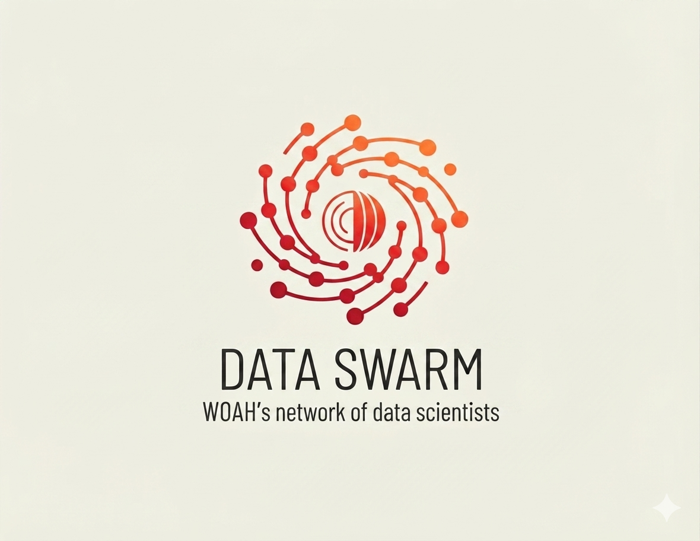

Data Integration
& Analytics Department
Technical material produced by DIAD: reports, code, datasets, models and training that turn animal health data into evidence and advice.
Browse all material About the departmentOur four areas
The Observatory
Monitors how Members implement WOAH standards and formulates recommendations.
Observatory materialEpidemiology & Quantitative Intelligence
Situation reports, surveillance data integration and model-based risk intelligence.
EPIQ materialAnimal Health Econometrics
Quantifying the economic side of animal health, with academic partners.
Econometrics materialData Science Lab
Data products, master datasets, APIs, automation and AI adoption across WOAH.
DS Lab materialRecently published
Observatory annual report
Yearly analysis of how Members implement WOAH standards, with recommendations.
Thematic studies
Ad-hoc studies on the implementation of specific WOAH standards, based on data collected from Members.
WOAH style for R (woah-style)
R package with the WOAH colour palette and style guide features for consistent charts and reports.
QueryStandards
An app to query PDF documents such as the WOAH Codes and Manuals.
AI, a 15 minute tour
A short introduction to AI for WOAH staff.
Data science training
Public training material in data science.

The Data Swarm
DIAD works with the DSQE network, WOAH's network of data scientists: seven WOAH Collaborating Centres in six countries, plus academic partners in Japan, South Korea, the United Kingdom and Spain.
Meet the network